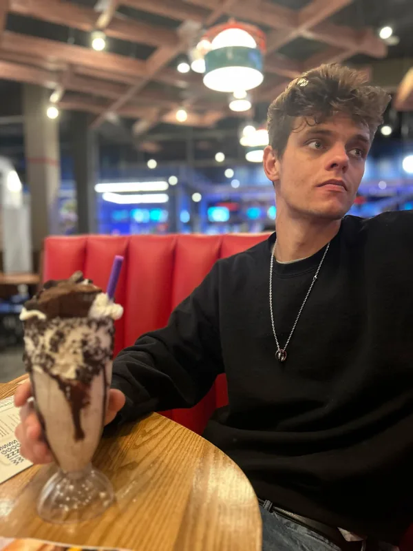
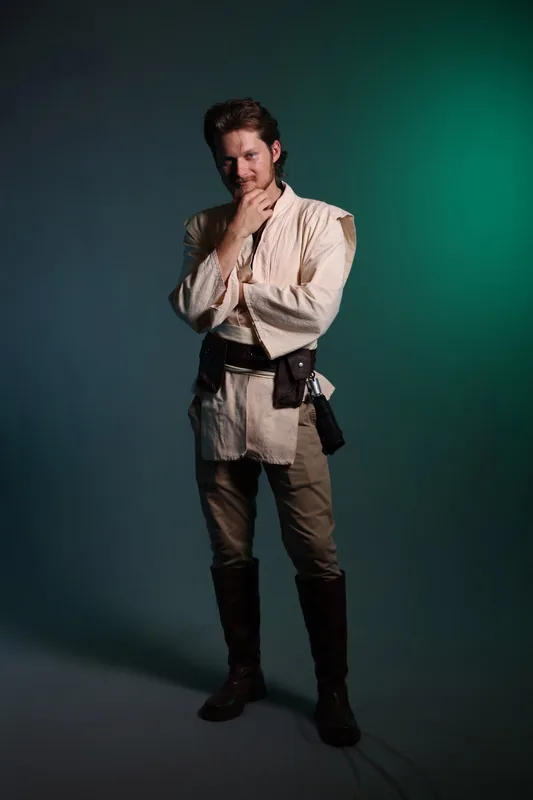
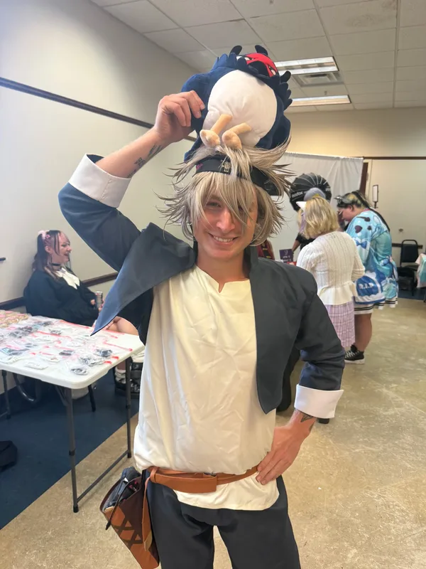
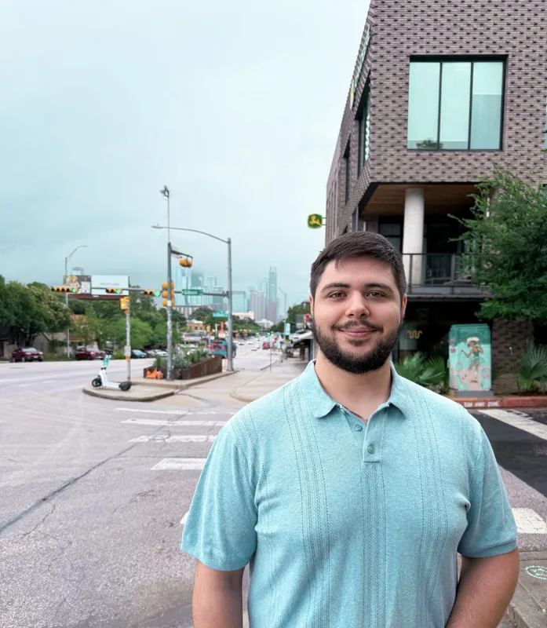

Meet Matthew Jobborn
I'm Matthew Jobborn, one of the founders and the operator of No Plan Just Entertainment.
I've been hooked on anime since I was five years old, and after that there was no turning back. If it was nerdy, I was into it - anime, manga, comics, video games... you name it. Those hobbies have always been a huge part of who I am.
As I got older, life got busier. I spent nearly a decade helping build and run other people's businesses, and somewhere along the way I realized I wasn't making time for the things I actually loved anymore. After one particularly rough week, I decided it was time to build something of my own.
I called up my four closest friends and said, "Let's start a podcast."
That one decision snowballed into something way bigger than any of us expected. We started with a D&D podcast, then expanded into live interviews at anime and comic conventions. Those interviews introduced us to incredible people, which led to our second show, No Plan Just Tangents. Before long, we were buying a CNC machine, making our own products, and vending at conventions all over.
Honestly... I still laugh because this whole thing started as a D&D podcast.
If you've met me, you already know I'm a little random, a little impulsive, and I tend to move fast. I love trying new ideas, making cool stuff, and connecting with people who are just as passionate about this community as I am.
At the end of the day, that's what No Plan Just Entertainment is all about: creating things we love, meeting awesome people, and having a damn good time doing it.

Meet Bryce
I'm Bryce Trum, co-founder and chief editor of No Plan Just Entertainment.
Since I could remember, being nerdy has been my lifestyle. I can attribute some of this to my father as he grew up loving arcade games and, in turn, bought my brother and I our first console one Christmas. A PlayStation 2 with MX vs. ATV: Unleashed. Immediately I was hooked on playing video games and loved how many were available to play. One thing led to another and now I own my own PC with tons of games in my steam library, and other assorted online marketplaces.
Different from the other co-founders, I have never been too much into Anime or high fantasy. I loved cartoons but I grew up on the old but gold, and I didn't enjoy the luxury of cable for a good chunk of childhood. I was, however, much more into the competitive, or otherwise, first-person shooter games. Halo, Call of Duty, Siege, you name it, I was playing it. I did dabble in other areas such as Fable or Infamous, and recently I have been enjoying taking a step back from the fps scene to enjoy games that were more curated for a great story and interactive play experience. As well as picking up a few Anime's on the way, with the help of the fellow founders, so as not to watch some absolutely abhorrent shows (you know what I'm talking about).
In person you'll find me yapping about the latest Star Wars, or how they've destroyed some of the franchises that I love (I'm looking at you Halo Studios). That being said, I'm also someone you'll find who will listen, and learn. I've realized through this journey just how much there is to offer in this world that I have stepped in. The people are kind and passionate, and it certainly inspires me to widen my horizon. Which I think is the crux of why we do this. To live and learn, to spread love and be merry, and having a medium that we can all speak through to each other.

Meet Addison
I'm a silly little guy who loves games, anime and general pop culture! I love all of yall and I hope to see yall at our cons! :)

Meet Alex
Hey! I'm Alex, one of the crew behind No Plan Just Entertainment.
I'm the resident tech nerd of the group. By day I work in IT, but outside of work you'll usually find me talking about anime, gaming, Dungeons & Dragons, fantasy books, or whatever new obsession has grabbed my attention.
One of my favorite parts of conventions is meeting people who are just as passionate about their hobbies as I am. Whether we're talking about a favorite series, showing off cool finds, or just nerding out over something random, I'm always happy to chat.
Thanks for stopping by, and I hope we get a chance to meet you at a convention!